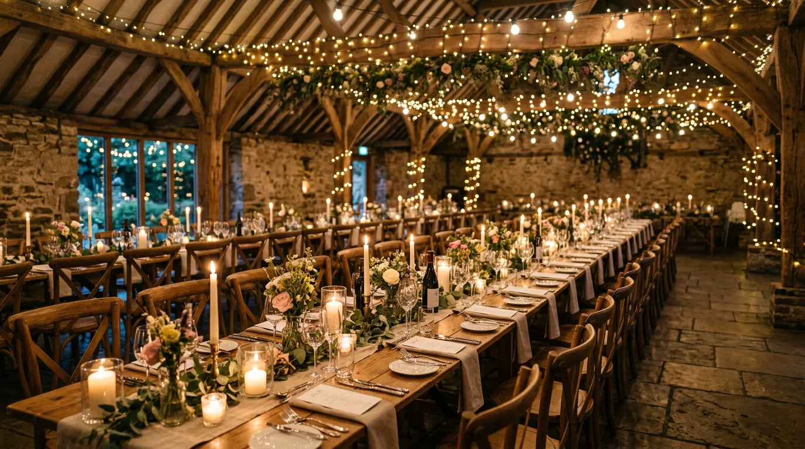

Fold-in flap
Beautiful, personal ceremonies
Hi, I'm Alex Jeal, an independent celebrant and wedding DJ based in the South East. I specialise in personalised wedding ceremonies, vow renewals, funerals and baby naming ceremonies, all delivered with a fresh approach.
Ceremonies with personality, warmth and a fresh approach.
